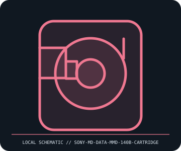

[ REMOVABLE MEDIA // MODEL-SPECIFIC RECORD ]
Sony MD DATA MMD-140B 140 MB Disc Cartridge
Sony MD DATA first-generation 140 MB magneto-optical data disc. This catalog entry distinguishes the removable medium from its drive/reader and calls out model-specific fit and format caveats.

IDENTIFICATION: Transcribe the entire model/part number, capacity, generation and revision from the label or packaging. Confirm the exact host-device manual before inserting or writing.
Format, capacity and compatibility
| Product / part ID | Sony MD DATA MMD-140B 140 MB Disc Cartridge |
|---|---|
| Generation / format | Sony MD DATA first-generation 140 MB magneto-optical data disc |
| Capacity and medium | 140 MB rewritable MD DATA medium in a protective MiniDisc-sized cartridge. It is a data-format disc, not a standard MiniDisc audio disc, and is not an optical drive. |
| Compatibility | Requires an MD DATA recorder/drive (for example, Sony MDH-10 computer drive or an MD DATA multitrack recorder) with matching data format. Standard MiniDisc audio players/recorders cannot use MD DATA cartridges as generic 140 MB data media. |
| Version and model caveat | Do not confuse MD DATA MMD-140B with audio MiniDisc, Hi-MD 1 GB media, or later MD DATA2 650 MB media. Similar shell shape does not establish interchangeability; use only the exact recorder’s supported disc type. |
Handling and preservation
Keep the shutter closed and cartridge in a case; protect it from dirt, scratches, bending, liquids, and strong magnetic fields. Do not open the shell or touch the disc. Preserve recordings through compatible hardware and retain checksummed copies on current storage.
- Preserve original packaging, label, acquisition notes and any write-protect state; photograph the media before use.
- Make at least two independent copies of valuable data, verify checksums, and periodically test a restore. A removable cartridge or card alone is not an archival strategy.
Model and version notes
Do not confuse MD DATA MMD-140B with audio MiniDisc, Hi-MD 1 GB media, or later MD DATA2 650 MB media. Similar shell shape does not establish interchangeability; use only the exact recorder’s supported disc type.
Standards and product-family sources establish the generation; exact model manuals, labels, regional revisions, firmware, interface and host support determine actual interchangeability.
Sources and standards
- MiniDisc.org — MD DATA product tableReference catalog distinguishes 140 MB MD DATA from audio MD and later MD DATA2 media.
- Sony — MMD-140B product specificationManufacturer support entry point for model-specific manuals and format notes; select the exact MD DATA device.
Manufacturer and standards references are preferred; archival manuals or museum records are identified when products are discontinued. Capacity and compatibility claims are scoped to the specific SKU and generation named above.